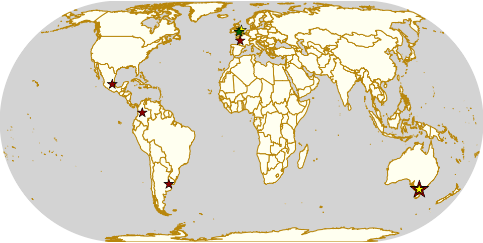

Weekend Highlights: 01 Dec 2019 (SUNDAY)
This is the Sunday addendum to our weekly highlights, giving events on the 1st a bit of space to breathe!
As well as action in Colombia as part of the 10th anniversary of Roller Derby in the country, there's also a bunch of open scrims in Australia and the UK, a triple header in France, action in Mexico and Argentina... and more chances to try Short Track Roller Derby in Worcester, UK.
The rules are, as usual: highlights limited to 1 event per country, with an "extra" event allowed for a different kind of fixture (so, 1 tournament and 1 bootcamp), or if they involve Scottish leagues (since we are the Scottish Roller Derby Blog). Other notability might also allow the extra event - great posters, notable teams, etc. (League birthdays may count as "special" enough, at our discretion ;) )
In a bid to make this list as useful as possible, we've avoided links to Facebook except where noted. (Links to Teams are to non-Facebook resources - Instagram, or actual team pages - we'd strongly recommend that Teams get themselves an actual webpage [we can help host one if you need help]).
Locations are roughly organised East-West (with things before the weekend out sequence at the start).
Sun: Keysborough, VIC, Australia
Kingston City Rollers host the Mornington Penny Dreadfuls for a bout!
- Kingston City Rollers B versus Penny Dreadfuls (Mornington Peninsula | Frankston)
Event starts: 1700 Sunday (doors open?)
Venue: Springers Leisure Centre, 400 Cheltenham Road, Keysborough, VIC, Australia
Sun: West Footscray, VIC, Australia
WestSide Derby Dollz host the first of their three-part "Summer Slam" series of open "Amber" scrimmages. (For those not familiar with the colour-coding scrimmage system, "Amber" is low-contact, intermediate between "Green" and "Red" (full contact)). Players will retain their teams for the following two parts of the series, to allow a better feel for their progress.
- Sharks versus Jets (Amber scrimmage teams)
Event starts: 1200 Sunday
Venue: RecWest Footscray, Essex St, West Footscray, VIC, Australia
Sun: Grimsby, UK
Grimsby Roller Derby hosts their "Ho Ho Ho Down", a Christmas open scrim event. There are two scrims to sign up for: one WFTDA-gender, and one Open To All genders. Christmas themed outfits encouraged!
- WFTDA-gender policy scrim
- OTA-genders scrim
Event starts: 1200 Sunday
Venue: Grimsby Leisure Centre, Cromwell Road, Grimsby, UK
Sun: Worcester, UK
Worcester Wyldings enjoyed their first public training session with Rolla Skate Club 's Short Track Roller Derby ruleset that they're holding more!
This 2 hour session is open to rookie level skaters and above, and will introduce the ruleset in an informal setting, as well as providing time for a complete game (Short Track games take only 30 minutes of track time).
- Short Track Roller Derby Scrimmage
Event starts: 1300 Sunday
Venue: Tudor Grange Academy, Worcester, UK
Sun: La Rochelle, France
Roller Derby La Rochelle host a triple header of Roller Derby, "Poulpy`s Party", including some open subscription games, and covering all gender policies.
- Sombres Cheeky (La Rochelle O) versus Starlings (Caen O) + guests [Open To All genders game]
- Hell'R Cheeky Dolls (La Rochelle) versus UB (open subs team) [WFTDA-gender]
- Sombres Heros (La Rochelle M) versus Starlings
Event starts: 1000 Sunday
Venue: A.S.P.T.T, la Pinelière, L'Houmeau, France
Sun: Lanús, Argentina
Atomic Bombs Roller Derby host a double header this Sunday, with both Open To All genders and WFTDA-gender bouts.
- Super Cerdos versus Malteados del Mini Super (OTA-genders mixed skill teams)
- Atomic Bombs (Lanús) versus Springfield (WFTDA-gender B/C level mixed team)
Event starts: 1300 Sunday (first whistle)
Venue: Club Podestá, Velez Sarsfield 1370, Lanús, Argentina
Sun: Bogotá, Colombia
Rock N Roller Queens continue their 10 year anniversary celebration with the return of their annual Derbynaldos event, a day of variant Roller Derby style challenges for teams of 7.
- Challenge Categories:
- Mejor Año Viejo (best costume for the Old Year)
- Vuelta a La Manzana Ovalada (fastest lap of the track, whilst carrying items?)
- Equipo de la Suerte ("luck team")
Event starts: 1400 Sunday
Venue: Pista Polo Club, Bogotá, Colombia
Sun: Pachuca, Mexico
Medusas Roller Derby host an exhibition game to promote their league, and the sport, on Sunday.
- Exhibition game
Event starts: 1900 Sunday
Venue: Unidad Deportiva Municipal, Pachuca, Mexico